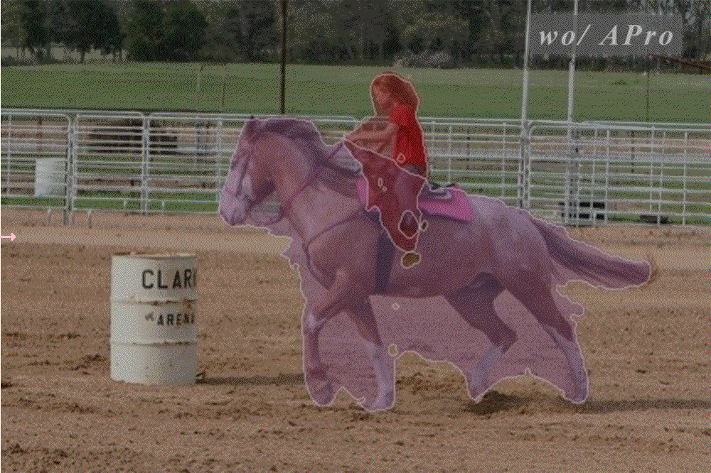
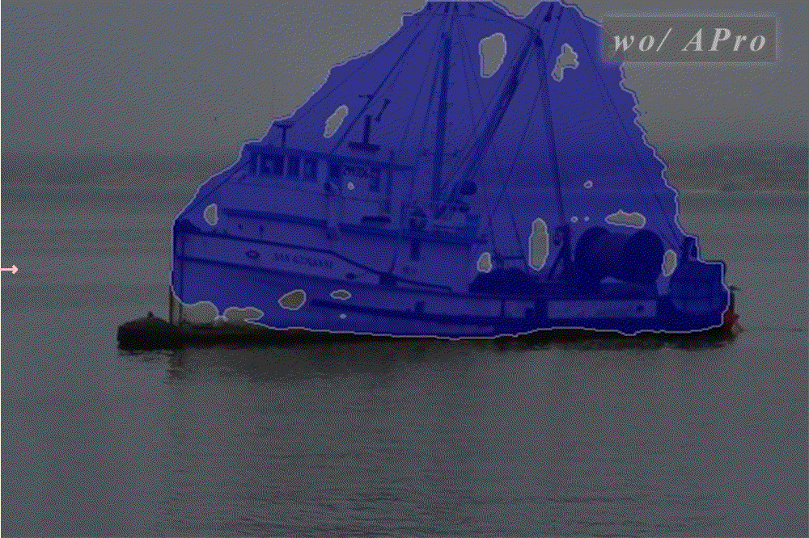
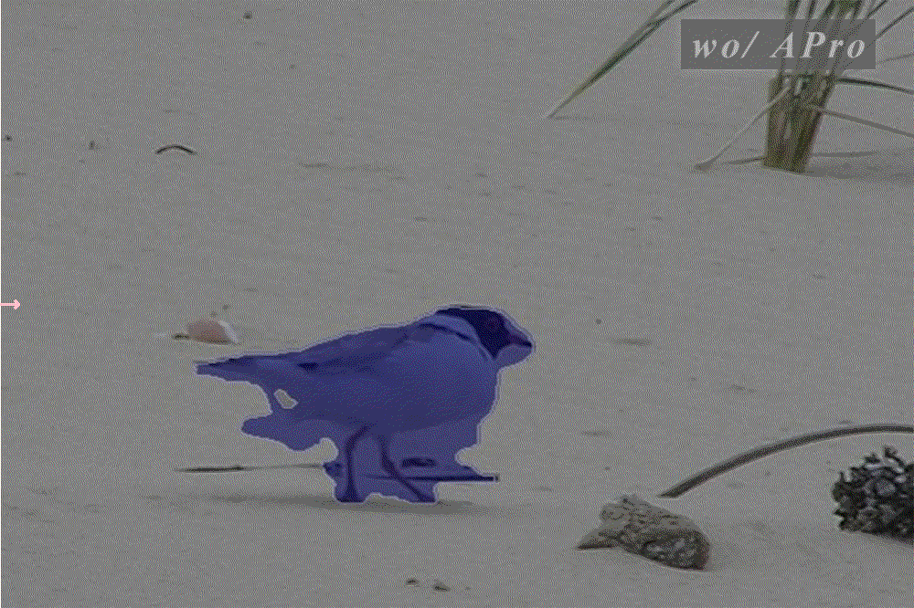
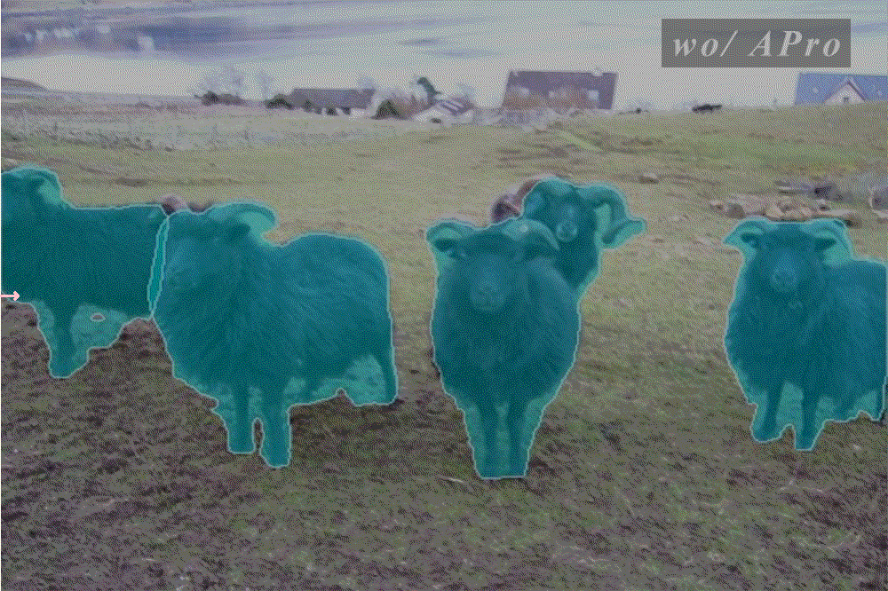

|
|
 |  |
|  |  |
Weakly-supervised segmentation with label-efficient sparse annotations has attracted increasing research attention to reduce the cost of laborious pixel-wise labeling process, while the pairwise affinity modeling techniques play an essential role in this task. Most of the existing approaches focus on the local appearance kernel to model the neighboring pairwise potentials. However, such a local operation fails to capture the long-range dependencies and ignores the objects’ topology. In this work, we formulate the affinity modeling task as an affinity propagation process, and consequently propose both local and global pairwise affinity terms to generate accurate soft pseudo labels. An efficient algorithm is also developed to reduce the computational cost significantly. The proposed approach can be conveniently plugged into existing segmentation networks. Experiments on three typical label-efficient segmentation tasks, i.e. box-supervised instance segmentation, point/scribble-supervised semantic segmentation and CLIP-guided semantic segmentation, demonstrate the superior performance of the proposed approach.
🌟We propose a method named APro, designed to generate precise soft pseudo labels online for unlabeled
regions within segmentation networks.
💡Our APro method can be seamlessly plugged into the existing segmentation networks for various tasks
to achieve the weakly-supervised segmentation with label-efficient sparse annotations.

We formulate the weakly-supervised segmentation task as a uniform affinity propagation process, including
global affinity propagation and local affinity propagation.
The global affinity propagation leverages
the topology-aware tree-based graph and relaxes the geometric constraints of spanning tree to capture
the long-range pairwise affinity. With the efficient design, the O(N2) complexity of brute force implementation
is reduced to O(NlogN), and the global propagation approach can be performed with much less resource consumption
for practical applications.
The local affinity propagation is designed to encourage the piece-wise smoothness with spatial consistency.
An exemplar illustration of the global and local affinity propagation processes is shown below,
The efficient implementation of global one is shown below,
We perform experiments on three typical label-efficient segmentation tasks, i.e. box-supervised instance segmentation, point/scribble-supervised semantic segmentation and annotation-free semantic segmentation with pretrained CLIP model, and the results demonstrated the superior performance of the proposed approach.